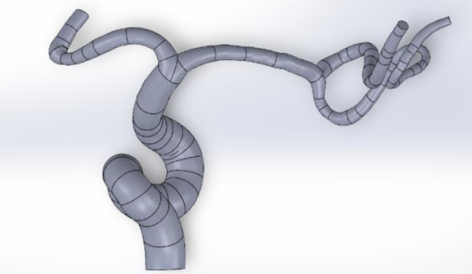
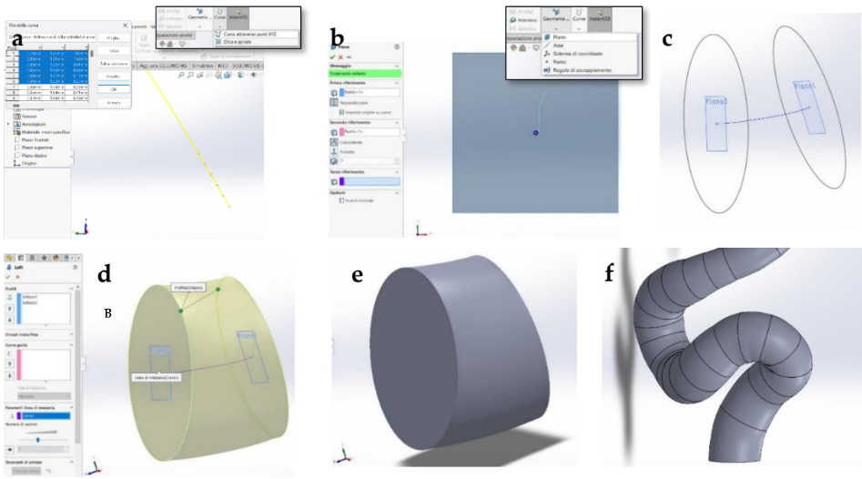
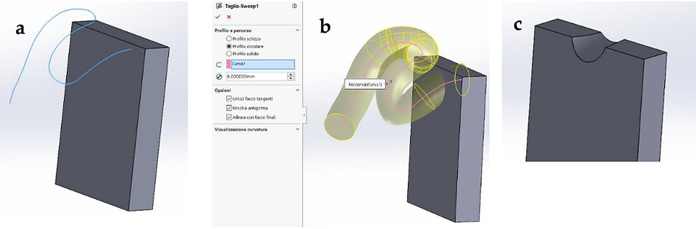
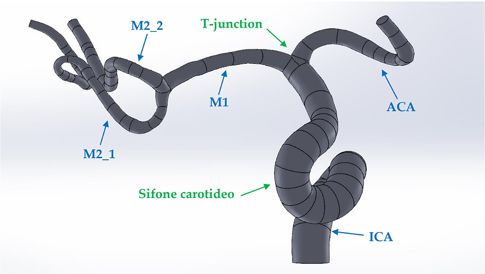
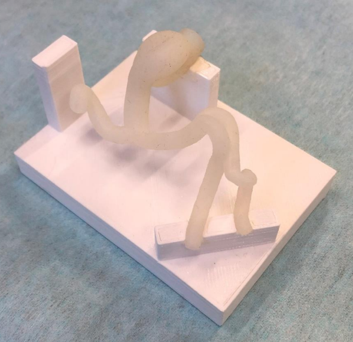

Cerebral Vascular Model for a Thrombectomy Test Bench
Project Overview
This project focused on the design of a cerebral vascular model intended for integration into an experimental test bench for mechanical thrombectomy.
The system was conceived to support surgical training and laboratory investigations, including flow studies and the simulation of embolic events.

Methodology
The vascular geometry was reconstructed in SolidWorks using centerline coordinates extracted from angiographic images.
A dedicated supporting structure was also designed to allow the vascular model to be incorporated into an external experimental circuit.


Suitable materials and additive manufacturing techniques were evaluated according to the available fabrication options and the requirements of the intended application.
Results
The final outcome was a CAD assembly comprising the cerebral vascular geometry and its supporting structure. The model was subsequently manufactured using 3D printing.

